Paloma Moniz
ALWFAV
(2019, London)
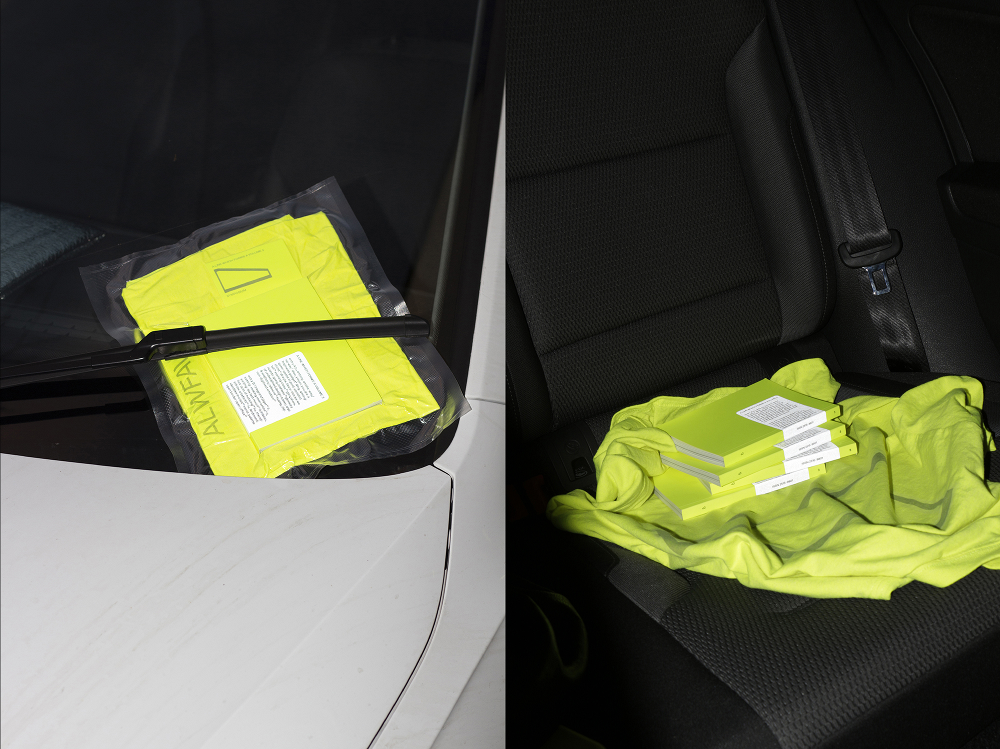
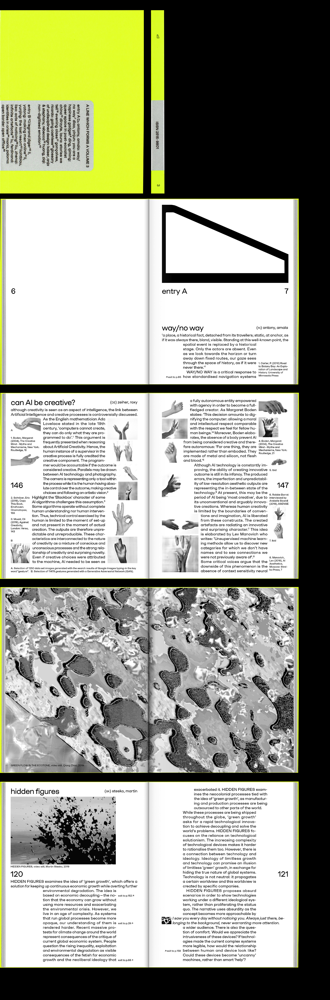
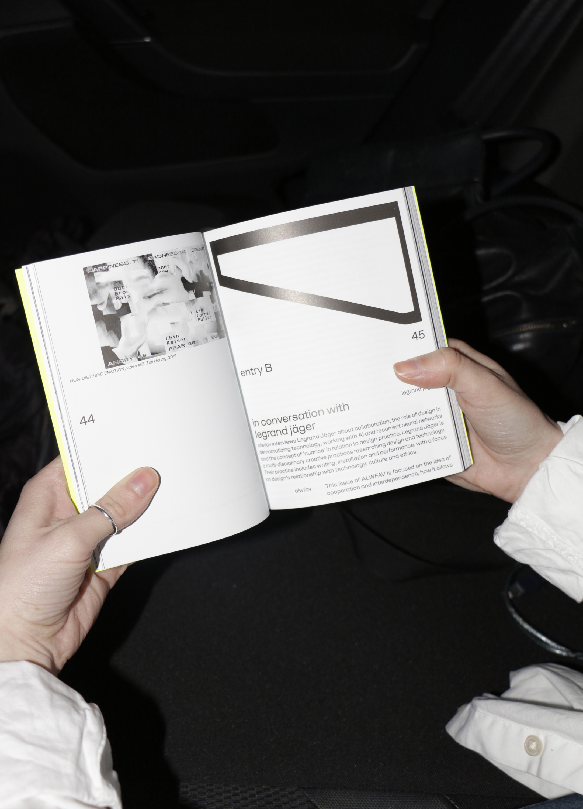
Of Mice and Men
(2017, Lisbon)
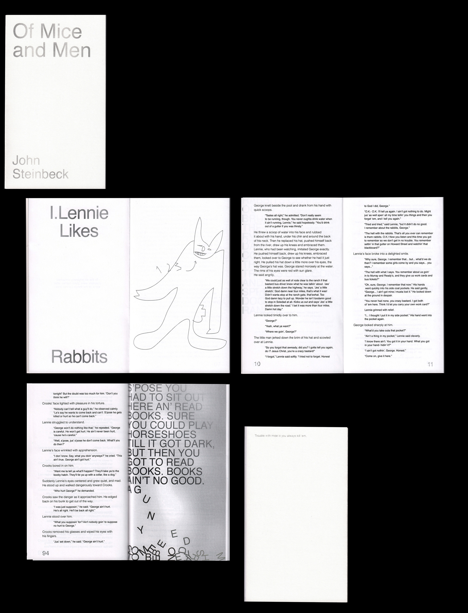
Premium Hustler
(2019, London)
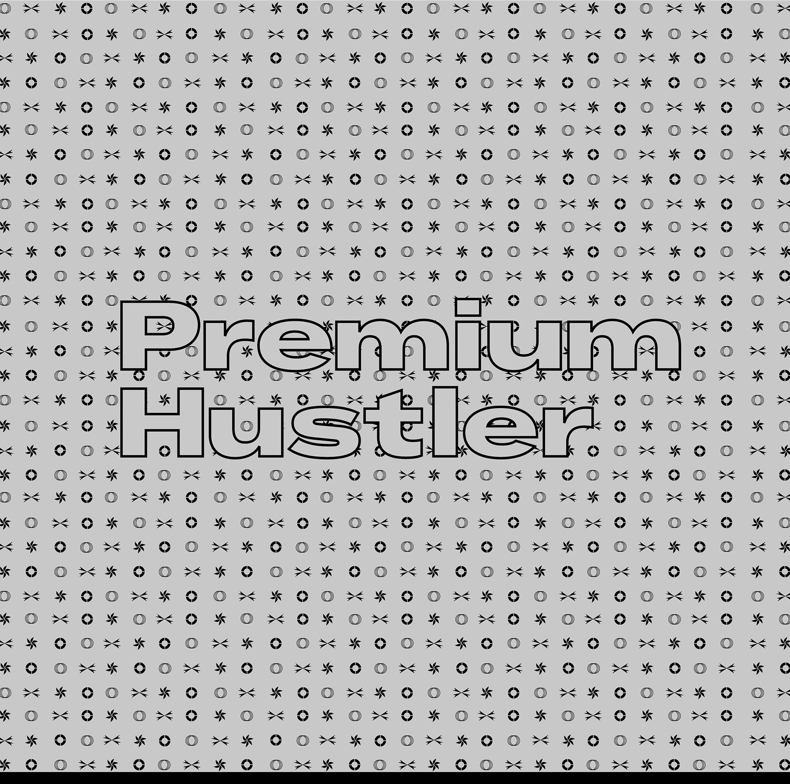
 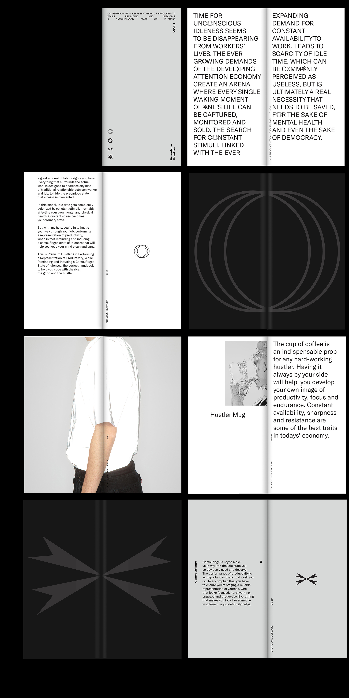
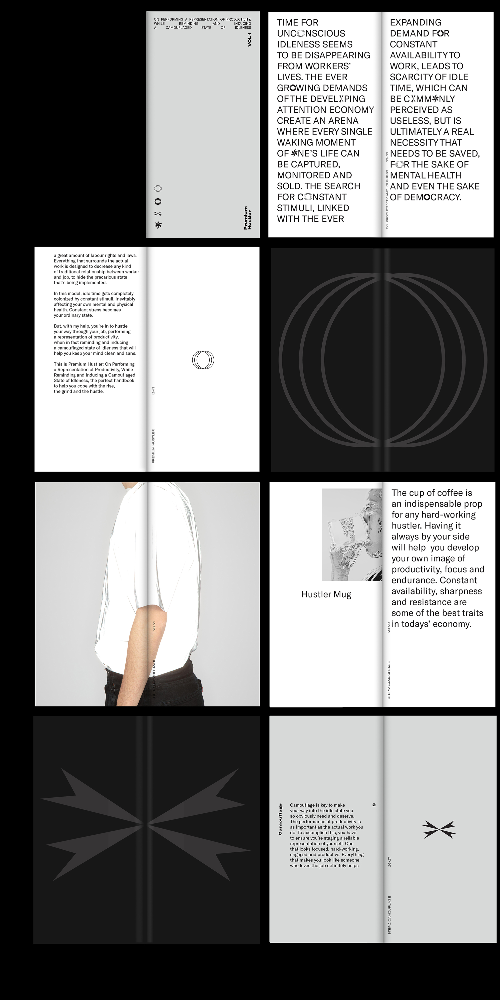
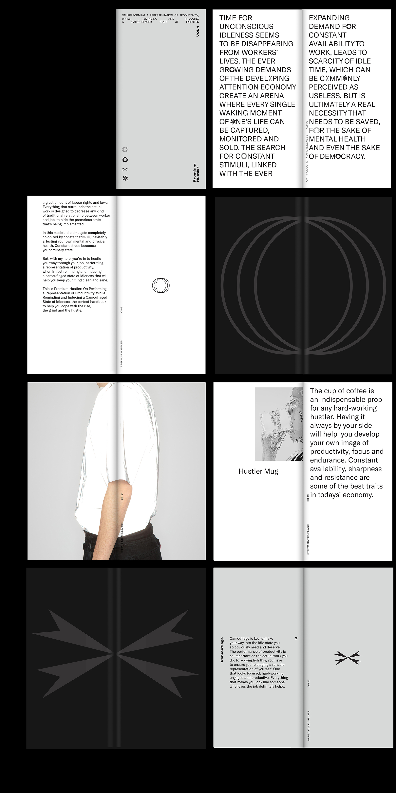
On the Role
(2018, Lisbon) More
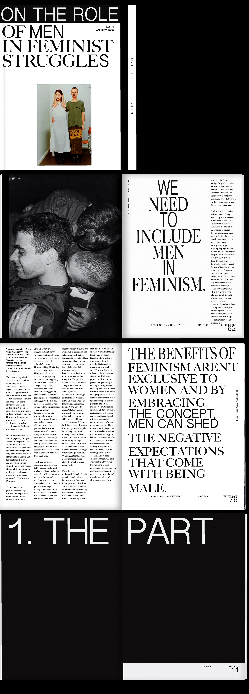
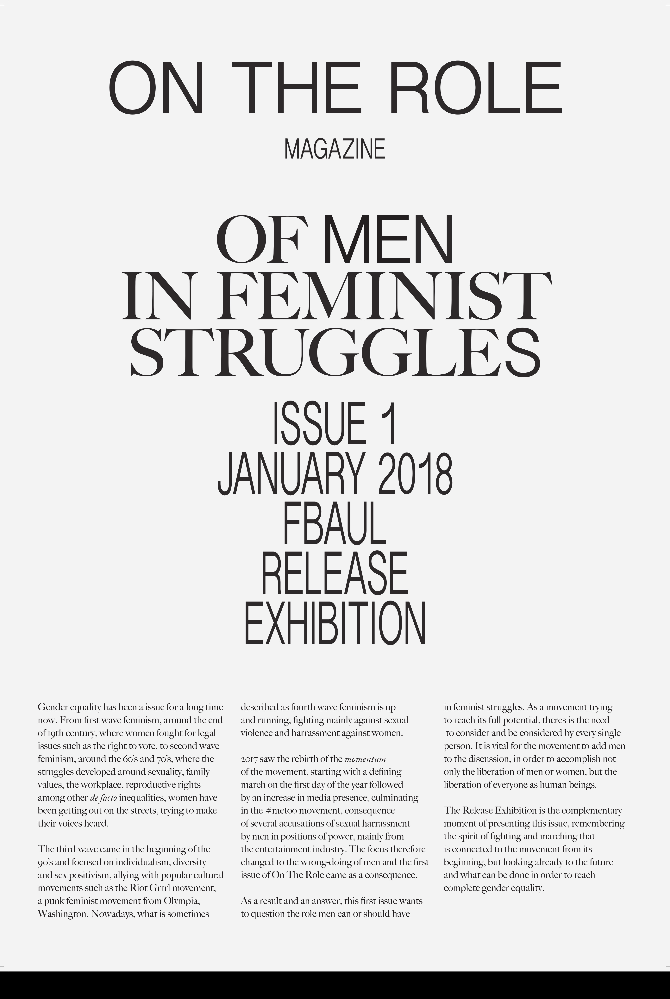
Crise de Identidade
(2018, Lisbon)
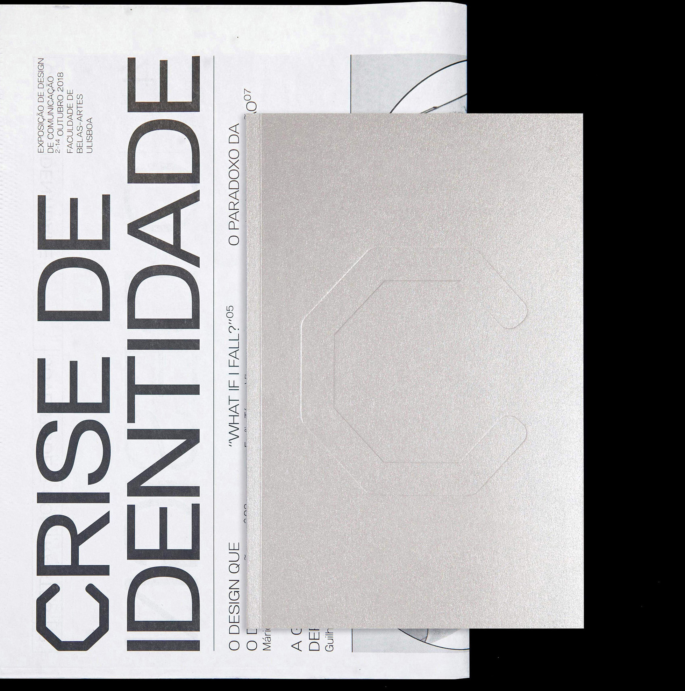
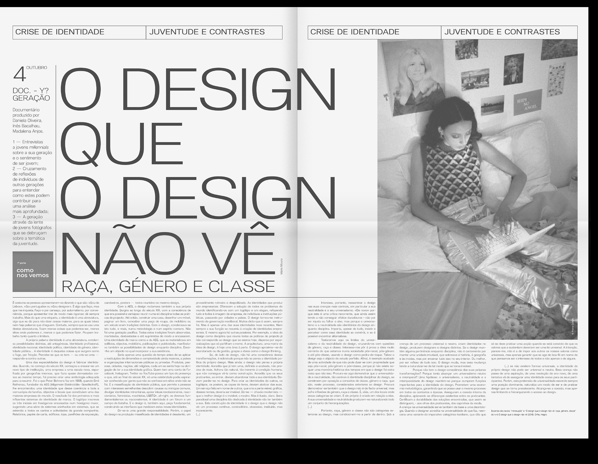
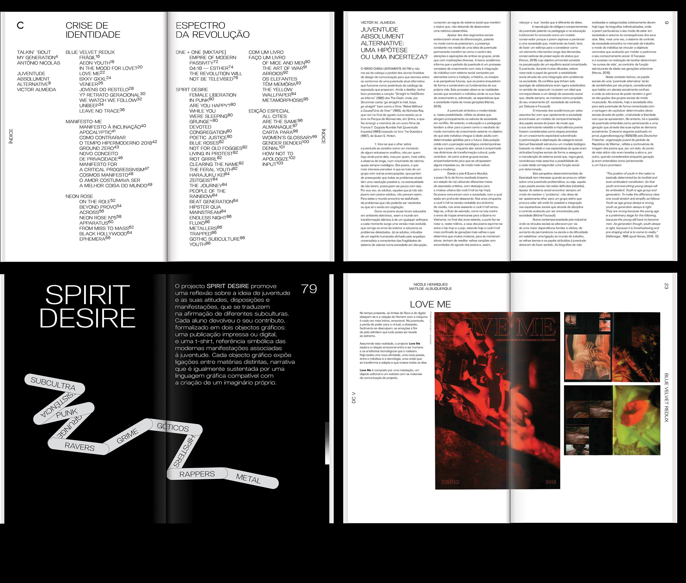
Cisterna
(2016/18, Lisbon)
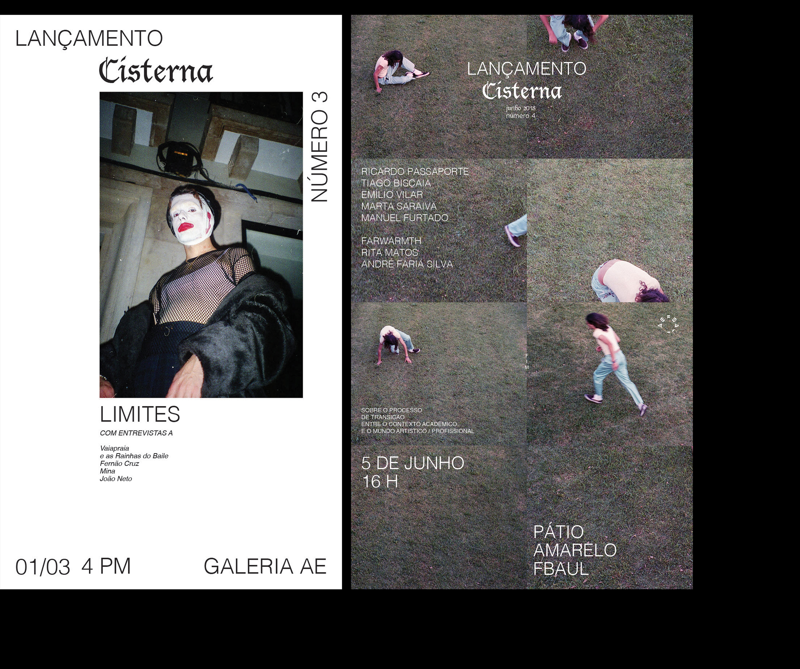


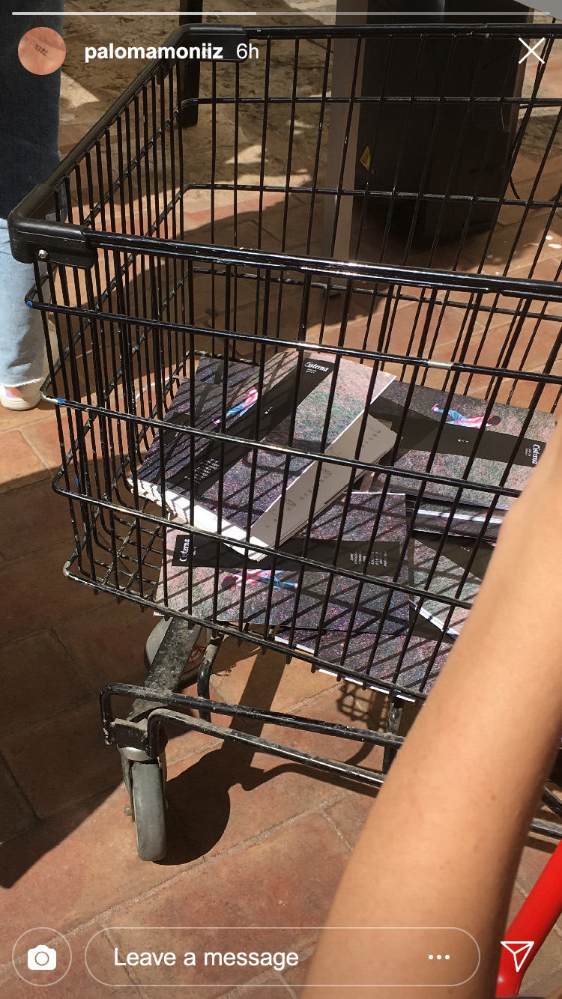
˜”*°•.˜”*°• the end •°*”˜.•°*”˜ 🕊
© Paloma Moniz